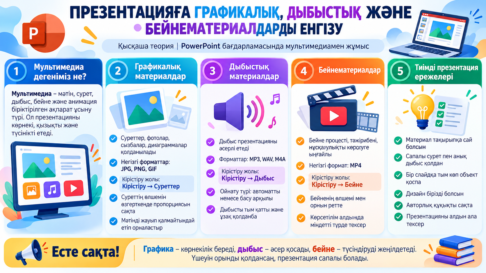

Презентацияға мультимедиа
Сабақ мақсаты. Презентация мазмұнына сай графикалық, дыбыстық және бейнематериалдарды таңдап, слайдқа енгізуді, олардың орналасуы мен ойнатылуын баптауды және танымдық викторинада қолдануды үйрену.
1. Теория
Сурет, дыбыс және бейнені слайдқа қалай енгізіп, қалай баптаймыз.
2. Тапсырма
10 слайдтан тұратын куиз жасап, .pptx және PDF жібересің.
3. Қорытынды
Негізгі ережені бекітіп, өзімізді бағалаймыз.
Сабақ жоспары
Бұл бөлім тек мұғалімдерге көрінеді.
Теория: мультимедиа
Бұл бөлімде мультимедиа не екенін, суретті, дыбысты және бейнені слайдқа қалай енгізіп баптауды үйренесің.
Мультимедиа — мәтін, сурет, дыбыс, бейне және анимацияны біріктіріп ақпарат ұсыну тәсілі. Ол презентацияны көрнекі, қызықты және түсінікті етеді. Әр түрін жеке-жеке, анимациямен қарайық. «Алға» батырмасын өзің басасың.
1Мультимедиа дегеніміз не?
2Графикалық материалдар
Сурет, фото, сызба, диаграмма. Негізгі форматтар: JPG, PNG, GIF. Кірістіру жолы: Кірістіру → Суреттер.
3Дыбыстық материалдар
Форматтар: MP3, WAV, M4A. Кірістіру жолы: Кірістіру → Дыбыс.
4Бейнематериалдар
Негізгі формат: MP4. Кірістіру жолы: Кірістіру → Бейне.
5Тиімді презентация ережелері
Екі слайдты салыстыр. Айырмашылықты өзің тап.
✕ Нашар
✓ Жақсы
Мазмұнға сай
Медиа тақырыпты түсіндіруі керек, әшекей емес.
Анық сурет пен дыбыс
Сапалы сурет, анық дыбыс қолдан.
Бір слайдқа тым көп қоспа
Мәтін аз, медиа бірнеше ғана.
Дизайн бірізді
Бір түс, бір қаріп, бір стиль.
Авторлық құқық
Дереккөзді жаз, өзгенің еңбегін құрметте.
Алдын ала тексер
Көрсетілім режимінде дыбыс пен бейне ойналатынын көр.
?Өзіңді тексер
Тапсырма: куиз жасау
10 тапсырмадан тұратын куиз жаса: әр тапсырма — жеке слайд. Бірінші слайдқа автордың (өзіңнің) аты-жөнін жаз. Әр слайдта сұрақ, медиа және басқанда ашылатын дұрыс жауап болсын.
Анимация → Пайда болу → «Бастау: Басқанда». Не жауап жазылған түймеге «Слайдқа гиперсілтеме» жаса.Қалай бағаланады
| Өлшемшарт | Балл |
|---|---|
| Сабаққа қатысым: сабаққа кіргенде автоматты түседі | 30 |
| Әр тапсырмада сұрақ пен басқанда ашылатын дұрыс жауап: 10 × 2 | 20 |
| Әр тапсырмада тиісті медиа слайдта тұр: 10 × 3 (фото, аудио, бейне) | 30 |
| Түсінікті рәсімдеу, дизайн: 10 × 2 | 20 |
| Барлығы | 100 |
Куизді жіберу
Қорытынды және бекіту

Бекіту сұрақтары
Қай материалды енгізу қиын болды?
Бұл сұраққа өз жауабыңды айт: суретті орналастыру, дыбысты баптау немесе бейнені тексеру.
Өзін-өзі бағалау
Бүгінгі тақырыпты қаншалықты түсіндің?